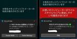

ラック・セキュリティごった煮ブログ のフィード

ブラウザ通知機能悪用手口～知識の新陳代謝の必要性を改めて感じた出来事～
ラック・セキュリティごった煮ブログ
デジタルペンテストサービス部のGoDaiです。 去年の事になりますが11月のある土曜日の夕方に突然知り合いの方から画面にウイルスに感染等のメッセージが表示されているので助けて欲しいと連絡がありました。...
4日前

プーチン大統領の所有船「GRACEFUL」に関する航行データの改ざんはいかにして行われたのか？AIS情報の改ざんを考える
ラック・セキュリティごった煮ブログ
ペネトレーションテスターのしゅーとです。 先日、匿名ハッカーによる航行データの改ざんにより、プーチン大統領の所有するヨットの位置がウクライナ領土のスネーク島に座礁したように見せかける事件が発生しました...
20日前
SANS(GMOB)オンデマンド受講記
ラック・セキュリティごった煮ブログ
受講経緯 SANS GMOBとは オンデマンド受講&試験勉強 教材資料 テキストブック Device Architecture and Application Interaction The Stol...
1ヶ月前
ダークネットで観測できる面白パケットいろいろ
ラック・セキュリティごった煮ブログ
始めまして。デジタルペンテストサービス部の北川です。 筆者の自宅ではダークネット観測装置という名のただのtcpdumpがずっと動いてるだけのRaspberry Piがあります。 パケットをどんどん記録...
2ヶ月前
エンジニア経験ゼロの文系ギャルが「CISSP®認定試験」を受ける
ラック・セキュリティごった煮ブログ
こんにちは！デジタルペンテストサービス部（以下「DP部」）で、セキュリティコンサルタント📚とかテクニカルコミュニケーター🤝とかをやっているMi*です🤗💓 この記事では、こないだ受けてきた「CI...
2ヶ月前
Neo4jでお手軽に検索環境を構築する
ラック・セキュリティごった煮ブログ
注意事項 Neo4jは、Apache Log4jを使用しているため、評価時のバージョン（Neo4j version 4.2以降）により、脆弱性（CVE-2021-44228）の影響を受ける可能性があり...
3ヶ月前
フォーマットから考える隠れbplistファイルの抽出方法
ラック・セキュリティごった煮ブログ
デジタルペンテストサービス部の魚脳です。 今回はiOS内部ストレージの中、たまにどっかに隠れているbplistファイルの構造やそれを引っ張り出す方法のまとめとなります。 bplistとは まずplis...
4ヶ月前
IoTセキュリティエンジニアの新入社員ってどんな研修受けてるの？
ラック・セキュリティごった煮ブログ
※こちらの記事は2020年9月14日公開note版「ラック・セキュリティごった煮ブログ」と同じ内容です こんにちは、かすたーど先生と申します。私が所属しているデジタルペンテストサービス部は、IoT、オ...
4ヶ月前
裏垢特定の考察と防御について
ラック・セキュリティごった煮ブログ
DP部 マきむら です。 私は裏垢特定というものをやったことがありませんが、 今回は裏垢特定について考察し、防御方法を提案します。 ※注意※ 弊社では以下の本記事のような卑劣で最低な下衆極まりない 裏...
5ヶ月前
~その後~接触感染通知アプリCOCOAの仕組みを調べてみた
ラック・セキュリティごった煮ブログ
※こちらの記事は2020年12月21日公開note版「ラック・セキュリティごった煮ブログ」と同じ内容です こんにちは デジタルペンテストサービス部のみゅーろっくまるです。 前回の記事で接触感染通知アプ...
5ヶ月前
接触感染通知アプリCOCOAの仕組みを調べてみた
ラック・セキュリティごった煮ブログ
※こちらの記事は2020年9月7日公開note版「ラック・セキュリティごった煮ブログ」と同じ内容です こんにちはデジタルペンテストサービス部のみゅーろっくまるです。今回は話題の接触感染通知アプリ「CO...
5ヶ月前
FalconNestって実際どんな攻撃を検知するのか？
ラック・セキュリティごった煮ブログ
こんにちは、デジタルペンテストサービス部、井上（WHI）です。 主に、オンプレのWindows Active Directory環境のペネトレーションテストを担当しています。 いきなりですが、弊社の無...
5ヶ月前
CTFでスマホアプリのセキュリティを学んでみよう
ラック・セキュリティごった煮ブログ
デジタルペンテストサービス部でスマートフォンアプリケーション診断を担当しているlac01です。本稿では、AndroidのCTFであるhpAndro Vulnerable Application (Ko...
5ヶ月前
IoTエラーログフォーマット標準化について
ラック・セキュリティごった煮ブログ
デジタルペンテストサービス部の木田です。 ハンドル名のウケが悪かったので実名にて失礼します。 はじめに 昨年の10月(2020年10月)にITU-TにてIoT機器のエラーログフォーマットについて標準化...
6ヶ月前
できる！ドライブレコーダー 個人情報漏えい対策入門編
ラック・セキュリティごった煮ブログ
オンライン会議でよく「画面映ってますか？」と聞かれることがありますが、だいたい問題なく映っています。でも確認せずに自信満々で進める人に限って映っていません。心の声を認識するだけではなく反抗する時代にな...
6ヶ月前
Open Source Vulnerabilitiesの話
ラック・セキュリティごった煮ブログ
お久しぶりです。「早くAIに仕事を奪われて楽になりたい！」と祈っているセキュ松です。 今年の2月にOSVが発表されましたね！Google様の力で、主要なOSSを対象として継続的にファジングを実施し、発...
6ヶ月前
IoTデバイスペネトレーションテストは誰にでもできますか？
ラック・セキュリティごった煮ブログ
答えは「NO」です。いきなり失礼いたしました。はじめまして、グループリーダーFです。株式会社ラックのデジタルペンテストサービス部でIoTデバイスペネトレーションテストサービスを担当しております。これは...
6ヶ月前
WinDbgで快適なデバッグ環境を構築する
ラック・セキュリティごった煮ブログ
デジタルペンテストサービス部の北原です。 今回は、Windowsでの開発や低レイヤのセキュリティの研究には欠かせないWinDbgの、GUI（Workspace）の構築方法とプラグインの導入方法について...
7ヶ月前
個人的おすすめWord Tips
ラック・セキュリティごった煮ブログ
デジタルペンテストサービス部のkjです。デジタルペンテストサービス部は名前のとおりペンテストを提供する部署なのですが、その成果は「報告書」としてお客様にご報告します。この報告書、どう作成するかというと...
7ヶ月前
次世代C2フレームワーク、Covenantをはじめよう
ラック・セキュリティごった煮ブログ
※こちらの記事は2020年8月30日公開note版「ラック・セキュリティごった煮ブログ」と同じ内容ですデジタルペンテストサービス部のしゅーとです。今回は、統合的な Red Teaming (Red T...
8ヶ月前
IoT診断とファジング
ラック・セキュリティごった煮ブログ
こんにちは。ねこやなぎです。 今回は有名なファジングツールである Peach Fuzzer Professionalの大部分がオープンソース化されたことについてふれたのち、組み込み機器にファジングを行...
8ヶ月前
GPSとGPS信号に対する攻撃
ラック・セキュリティごった煮ブログ
※こちらの記事は2020年8月24日に公開したnote版「ラック・セキュリティごった煮ブログ」と同じ内容です どーも、bubobuboです。 位置情報ゲーム『Pokémon GO』の登場と共に有名にな...
9ヶ月前
カジノセキュリティ概論（サイバーセキュリティ編）
ラック・セキュリティごった煮ブログ
どーも、bubobuboです。最近また日本版IR（統合型リゾート）を「どこに建てるか」という綱引きが話題になっているようだ。IRは統合型リゾートの名の通り、カジノを含む宿泊・飲食・娯楽・MICE産業を...
9ヶ月前
AutomatedLabでAD構築を自動化しよう
ラック・セキュリティごった煮ブログ
※こちらの記事は2020年8月17日にnote版「ラック・セキュリティごった煮ブログ」と同じ内容ですデジタルペンテストサービス部のしゅーとです。 普段は IoT ペネトレーションテスト、情報システムペ...
9ヶ月前
米中覇権争いとサイバー攻撃
ラック・セキュリティごった煮ブログ
こんにちは、Diogenesです。 今回は、サイバーセキュリティ屋の、米中の覇権争いに関連した情勢分析に挑戦してみたいと思います。（本稿に記載される見解・考察等は筆者個人のもので、所属組織の見解等を示...
9ヶ月前
現役ペンテスターが語るペネトレーションテストのお仕事
ラック・セキュリティごった煮ブログ
こんにちは、かすたーど先生と申します。 先日開催された「第25回 サイバー犯罪に関する白浜シンポジウム 」1日目のナイトトークに、株式会社ラックのデジタルペンテストサービス部のペンテスターが登壇し、「...
9ヶ月前
EOLを迎えたアクセスポイントで脆弱性を見つけた件(CVE出ました)
ラック・セキュリティごった煮ブログ
リニューアル後のブログでは初めましてになります。しゅーとです。 今回は、EOL(End-of-Life、サポート終了)になった機器を調査したら脆弱性を見つけてしまった話です。どんなものを見つけたのか、...
10ヶ月前
チートはダメ、ゼッタイ！オンラインゲームを壊す存在について考える
ラック・セキュリティごった煮ブログ
皆さんこんにちは、デジタルテンペストサービス部のねいちゃーど、と申します。 普段は オンライン不正・チート対策診断 サービスの診断員として、日々ゲームの脆弱性 (チート行為が可能な箇所) の診断を行っ...
10ヶ月前
記録媒体処理から考えるセキュリティと環境負荷軽減&SDGsの両立
ラック・セキュリティごった煮ブログ
前々前回紹介した「DP部流 機器を処分する際のあれこれ」を掘り下げる形で、記録媒体処理を中心に、技術的な動向・世間の動きを踏まえながら、セキュリティと環境負荷・SDGsについて考えてみました。
10ヶ月前
『存在』が盗まれる日～VRメタバースの脅威分析～
ラック・セキュリティごった煮ブログ
デジタルペンテストサービス部の仲上です。 週末、何してますか？忙しいですか？VRしてますか？ 来る日も来る日もステイホームで気軽に旅行も飲み会もしづらい状況が続いています。 家電量販店でも手に入るVR...
10ヶ月前